Game engineer, 14+ years. Gameplay systems that feel right,
performance work that buys back frames, and the tools the rest of the team builds with —
Unity3D and C# on the client, Go on the server.
About me
Game and simulation software, end to end, since 2012.
Fourteen years building game software — mobile games for most of it (board games, endless
runners, cricket sims, idle RPGs), and before that, healthcare and enterprise training
simulations, plus a stretch of AR and HoloLens work for the automotive industry. Long enough to
have shipped across most genres, and to know the hard part is rarely the feature. It's making the
feature hold up on a three-year-old phone, on a deadline, with a team that has to keep working on
it after I move on.
My core has been Unity3D and C# since 2012. These days I work as much on the server
as the client — Go for game servers, backend services and tooling. I also spend a
lot of time on the unglamorous half of the job: build pipelines, profiling, and the editor tools
that let designers tune a game without booking a programmer.
What I get called in for
Make the game feel right.
Most gameplay problems are feel problems wearing a logic costume. I build the systems that
decide how a game responds — turn flow, progression, economy, the moment-to-moment
feedback — then tune them until they read correctly to a player who will never see the code.
Core gameplay, end to end — turn flow, combat, progression, economy and the
feedback that makes each one legible to a player.
Live-ops features on games already in players' hands, without breaking the build.
Untangling monoliths into systems that can be changed independently.
Analytics that answer a question, instrumented so the team can see which parts of a
design are actually working.
Make every frame count.
A mobile game lives or dies on the cheapest phone that runs it. I profile first, find the real
cost, and fix that — batching, instancing, atlasing, memory and asset budgets — rather
than optimizing whatever is easiest to reach.
Draw call reduction — static batching, GPU instancing and sprite atlases, down
from the hundreds to under fifty.
Frame rate recovery on low-end devices, taking a game from half rate to near-locked.
Memory and asset budgets — profiling what actually costs, not what looks expensive.
Platform bugs others gave up on, including silent failures that only show as a
retention dip.
Remove friction from production.
The fastest way to speed up a team is to stop making them wait. Build automation, asset
pipelines, and tuning tools that let designers change the game without booking a programmer.
Build automation and CI/CD that turns a release from an event into a routine.
Addressable asset pipelines, so content ships without a client update.
Runtime tuning tools that let designers configure gameplay with no code dependency.
QA tooling — cheats, state jumps and harnesses that cut the time to reproduce a bug.
Server work in Go — authoritative game servers and the backend services behind
live features: player state, matchmaking and progression.
Projects
Games I've helped bring to life.
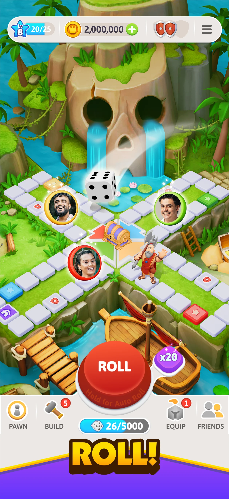
Ludo Hero — Board Adventure
A modern take on classic Ludo, with adventure elements layered over the board game.
Platform
Android / iOS
Role
Principal Engineer
Studio
QilaGames
Stack
Unity3D · C# · Go
What I built
Game features and server work in Go, analytics integration and cross-team delivery. Built the internal tooling: build automation, addressable asset management, and runtime feature-tweaking that let non-engineers configure the game with no code dependency.
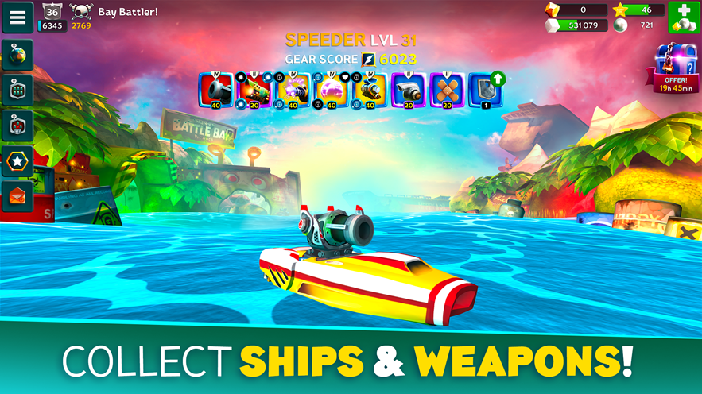
Battle Bay
Multiplayer naval combat with real-time team battles. Built for Rovio.
Platform
Android / iOS
Role
Principal Engineer
Studio
LongbowGames
Stack
Unity3D · C++ · Protobuf
What I built
Gameplay features, optimization and build automation. Authored the onboarding, build and deployment documentation that cut developer ramp-up time.
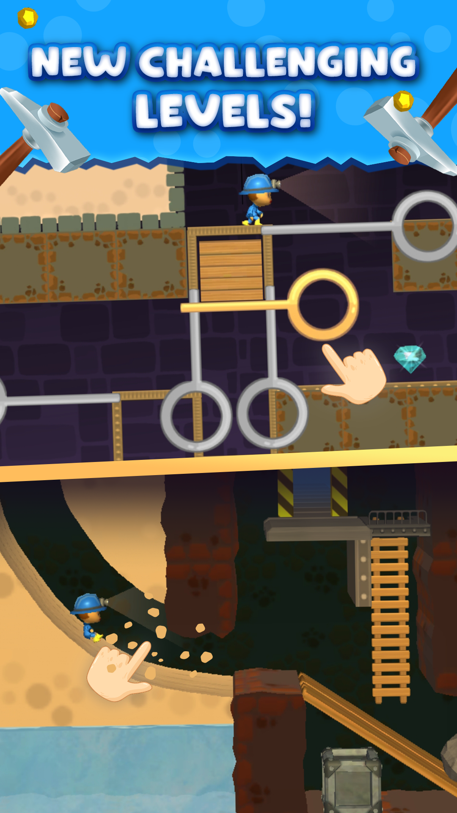
Mine Rescue
Mining simulation built around exploration and resource collection. Built for Carry1st.
Platform
Android / iOS
Role
Lead Engineer
Studio
LongbowGames
Stack
Unity3D · PHP · MySQL
What I built
Core gameplay systems, backend integration and the CI/CD pipeline. Migrated a monolith to a decoupled architecture, cut draw calls from 400+ to under 50, and took frame rate from 30–35 up to 55–60.
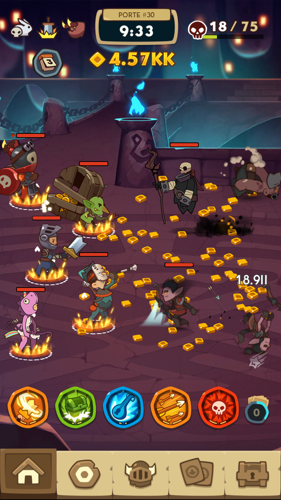
Almost a Hero
Idle RPG adventure with a cast of deliberately useless heroes. Built for DECA.
Platform
Android / iOS
Role
Lead Engineer
Studio
LongbowGames
Stack
Unity3D · Playfab
What I built
Live-ops systems, optimization and feature delivery. Ran the CI/CD pipeline that held live updates to minimal downtime, and mentored the junior developers on the team.
Yoga Quest
Relaxation and meditation puzzle game set in the Himalayas.
Platform
Android / iOS
Role
Principal Engineer
Studio
LongbowGames
Stack
Unity3D · Node.js · C#
What I built
System architecture, gameplay systems, performance tuning and build automation.
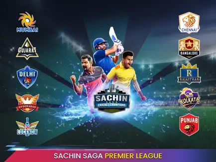
Sachin Saga Cricket Champions
3D cricket with advanced AI batting and bowling, plus multiplayer.
Platform
Android / iOS
Role
Sr. Programmer
Studio
JetSynthesys
Stack
Unity3D · Playblazer
What I built
Gameplay features across multiple releases and performance tuning. Integrated the analytics that drove product decisions.
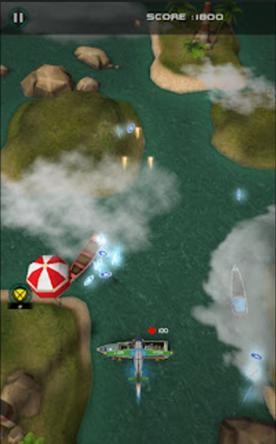
Airlift — The Rescue
Air combat rescue game with mission progression and aircraft upgrades.
Platform
Android / iOS
Role
Game Developer
Studio
HungamaGameShastra
Stack
Unity3D · C#
What I built
Gameplay features and mechanics implementation.
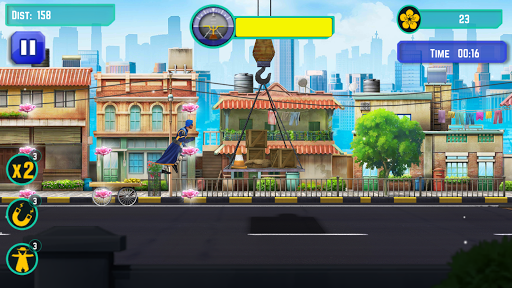
Flying Jatt
Endless runner built around Bollywood superhero action.
Platform
Android / iOS
Role
Game Developer
Studio
HungamaGameShastra
Stack
Unity3D · C#
What I built
Core gameplay loop and mechanics implementation.
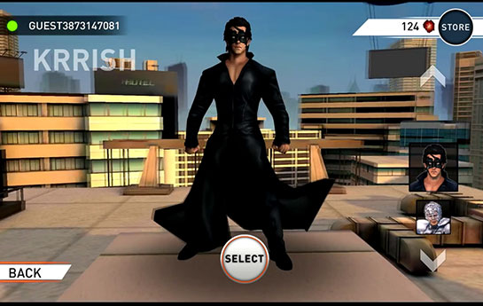
Krrish 3: The Game
Superhero action game with melee combat and multiplayer.
Platform
Android / iOS / PC
Role
Game Developer
Studio
HungamaGameShastra
Stack
Unity3D · SmartFoxServer
What I built
Combat systems and gameplay implementation. Cut multiplayer hosting cost by migrating off SmartFoxServer to Google Play Services.
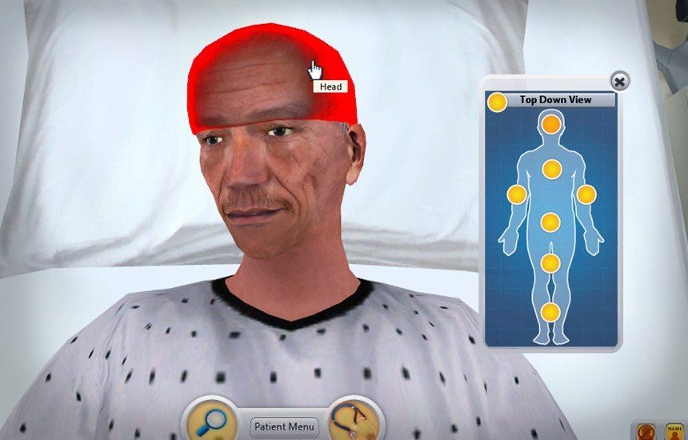
Virtual Patient Management
Healthcare simulation for training clinical staff on patient care.
Platform
Web / PC
Role
Game Developer
Studio
Indusgeeks
Stack
Unity3D · SmartFoxServer
What I built
Simulation systems and UI workflows.
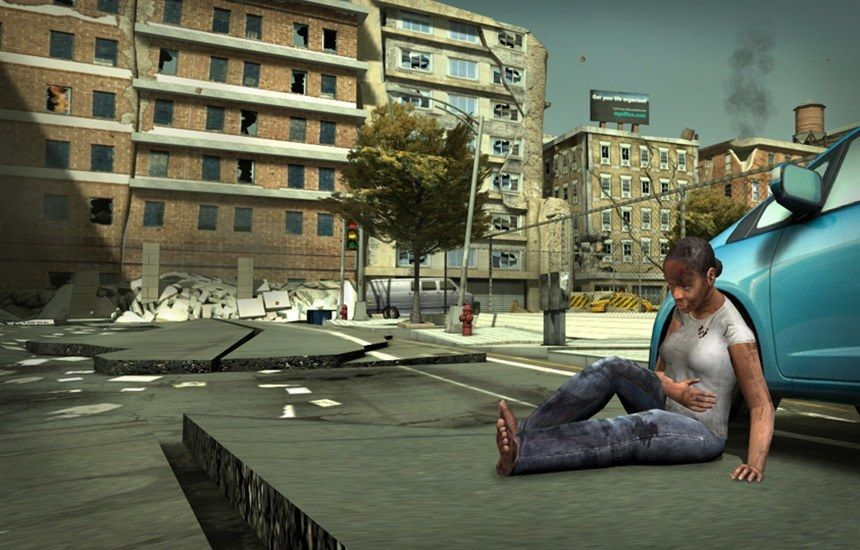
Mass Casualty Scenario
Disaster response training simulation for emergency teams.
Platform
Web
Role
Game Developer
Studio
Indusgeeks
Stack
Unity3D · SmartFoxServer
What I built
Scenario systems and interaction flows.
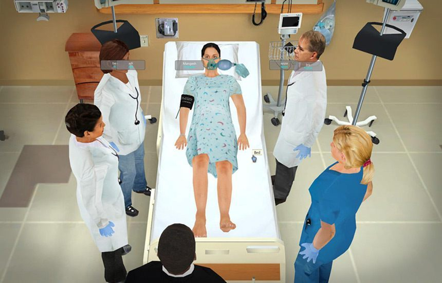
Nurse Training
Gamified training for nursing procedure and protocol.
Platform
Web
Role
Game Developer
Studio
Indusgeeks
Stack
Unity3D · SmartFoxServer
What I built
Training modules and system logic.
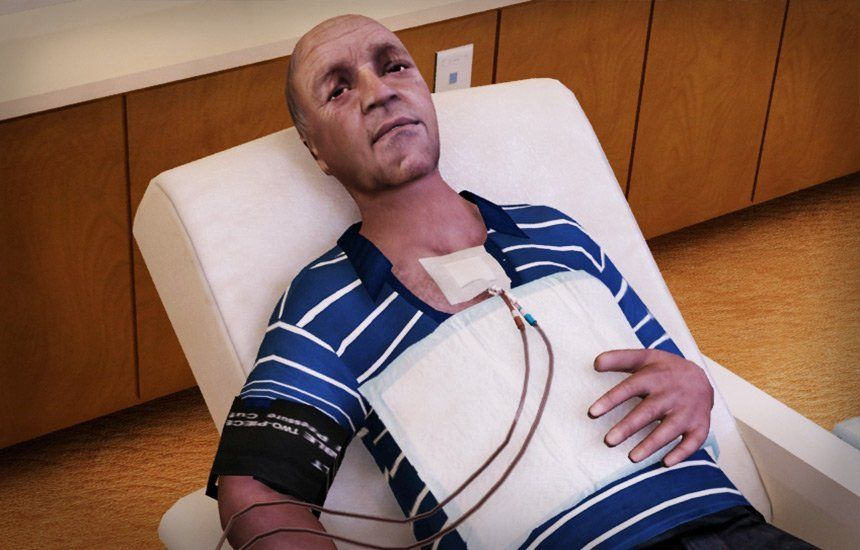
Dialysis Management
Medical training simulation covering dialysis procedure.
Platform
Web / PC
Role
Game Developer
Studio
Indusgeeks
Stack
Unity3D · SmartFoxServer
What I built
Simulation logic and system workflows.
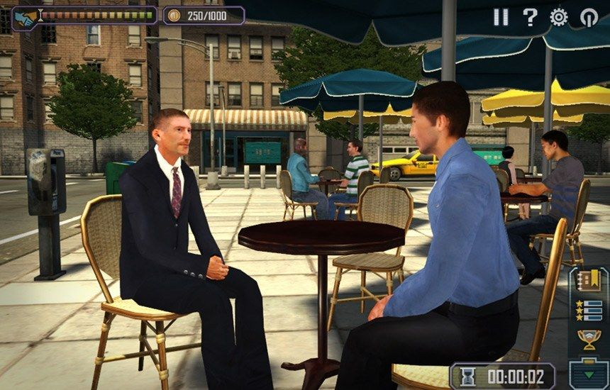
Grandmasters of Influence
Leadership and negotiation training simulation for enterprise teams.